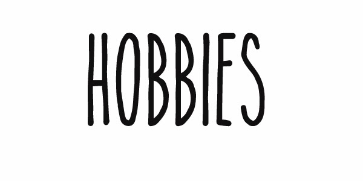

|  |
|
"Cosas que me gustaría hacer a corto plazo"
- Culminar mi carrera universitaria.
- Aprender a hablar con fluidez más de 4 idiomas.
- Llegar a conocer gran parte de las distintas culturas de mi país.
- Viajar a otros paises.
- Hacer paracaidismo.
- Visitar las 7 maravillas del mundo.
- Escalar una montaña.
- Aprender a cocinar. xdxd
- Ser reconocida por haber hecho algo importante.
- Aprender a patinar sobre hielo.
- Viajar con mi abue y mi mamá.
- Viajar con mis primos y hermanos.
- Tener una familia bien linda. :3
- Conocer a mis amigos de la universidad en persona. :,v
- Poder conservar a mis amigos de universidad, los quiero mucho.♥
- Poder cantar sin ponerme nerviosa.
- Aprobar todos los cursos sin bicas ni tricas.xdxd
- Hallar una forma de hacer que mis amiguis olviden a sus ex XDXD, efe por mis panitas.